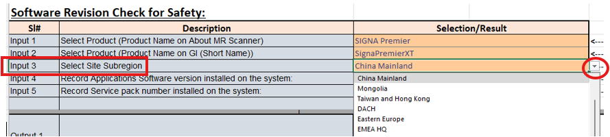

How to use the Software Matrix to perform the software revision check for safety during Planned Maintenance.
Procedure
- Access DOC1667089 (Software Matrix) from the online documentation library.
- Make sure you are on tab "ePM Form Data" within the spreadsheet.
- In the dropdown menu for Input 1, select the product name as it is shown in "About MR Scanner".
- In the dropdown menu for Input 2, select the product name as it is shown on GI (Short Name).
- In the dropdown menu for Input 3, select the Site Subregion.
Note Some regions may be identified as Global in the datasheet. If “N/A” shows up in Output, choose “Global” instead.

- In the dropdown menu for Input 4, select the Software Revision that is on the system.
- Optional for Input 5: Type in the number of the Service Pack installed on the system, if that information is available.
- After the inputs are filled correctly, information will show up automatically in the Output cells.
- Output 1 lists the latest Applications Software Version. Record this information on the ePM form.
- Output 3 lists the latest Minimum Safety Service Pack. Record this information on the ePM form.